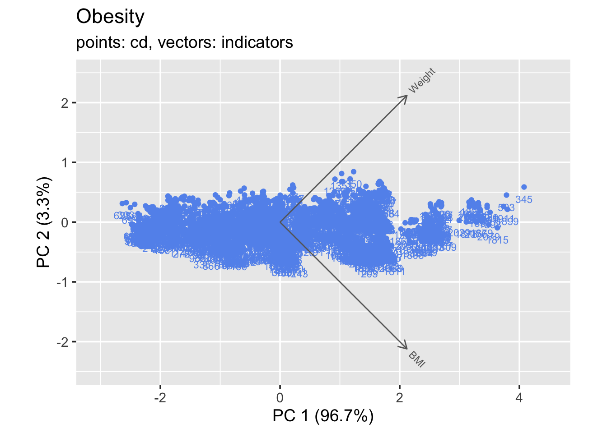

── Conflicts ────────────────────────────────────────── tidyverse_conflicts() ──
✖ dplyr::filter() masks stats::filter()
✖ dplyr::lag() masks stats::lag()
ℹ Use the conflicted package (<http://conflicted.r-lib.org/>) to force all conflicts to become errors
data_mosaic <- data[c("Gender", "family_history_with_overweight","FAVC","SMOKE","SCC","IsOverweight")]library(forcats)data_mosaic$family_history_with_overweight <-fct_rev(data_mosaic$family_history_with_overweight)# Create a contingency tablecontingency_table <-table(data_mosaic$Gender, data_mosaic$IsOverweight)# Create a mosaic plotpng("mosaic_FamHistory_IsOverweight.png")mosaicplot(contingency_table, main ="Mosaic Plot", xlab ="Family History with Overweight", ylab ="Is Overweight", col =c("pink", "brown"))dev.off()
quartz_off_screen
2
# Create a mosaic plot for each variable in the table plotted against 'IsOverweight'data_mosaic$family_history_with_overweight <-fct_rev(data_mosaic$family_history_with_overweight)data_mosaic$IsOverweight <-as.character(data_mosaic$IsOverweight)data_mosaic$IsOverweight <-fct_rev(data_mosaic$IsOverweight)for(var innames(data_mosaic)[names(data_mosaic) !="IsOverweight"]) {png(paste0("mosaic_", var, "_IsOverweight.png")) contingency_table <-table(data_mosaic$IsOverweight, data_mosaic[[var]])mosaicplot(contingency_table, main =paste("Mosaic Plot for", var), xlab ="Is Overweight", ylab = var, col =c("pink", "brown"))dev.off()}
library(redav)library(calibrate)
载入需要的程辑包：MASS
载入程辑包：'MASS'
The following object is masked from 'package:dplyr':
select
data_pca <- data[c("Weight", "BMI")]draw_biplot(data_pca, mult =3) + ggplot2::ggtitle("Obesity", sub ="points: cd, vectors: indicators")

library(redav)library(calibrate)data_pca <- data[c("Weight", "BMI")]png("biplot_BMI_Weight.png")draw_biplot(data_pca, mult =3) + ggplot2::ggtitle("Obesity", sub ="points: cd, vectors: indicators") dev.off()
quartz_off_screen
2
library(redav)library(calibrate)data_pca <- data[c("Height", "BMI")]png("biplot_BMI_Height.png")draw_biplot(data_pca, mult =3) + ggplot2::ggtitle("Obesity", sub ="points: cd, vectors: indicators") dev.off()
quartz_off_screen
2
library(redav)library(calibrate)data_pca <- data[c("NCP", "BMI")]png("biplot_BMI_NCP.png")draw_biplot(data_pca, mult =3) + ggplot2::ggtitle("Obesity", sub ="points: cd, vectors: indicators") dev.off()
quartz_off_screen
2
# Load the required packagelibrary(ggplot2)library(dplyr)library(GGally)
Registered S3 method overwritten by 'GGally':
method from
+.gg ggplot2
data_pca <- data[c("Age", "Height", "Weight", "NCP", "CH2O", "FAF", "TUE","BMI")]# Convert all columns to numericdata_pca <-sapply(data_pca, as.numeric)data <- data %>%mutate_if(is.numeric, scale)# Create a scatterplot matrix# pairs(data_pca, pch = 19, cex = 0.6, main = "Scatterplot Matrix")# Open a PNG devicepng("scatterplot_numeric.png")# Create a scatterplot matrixpairs(data_pca, pch =19, cex =0.6, main ="Scatterplot Matrix")# Close the device and save the plotdev.off()